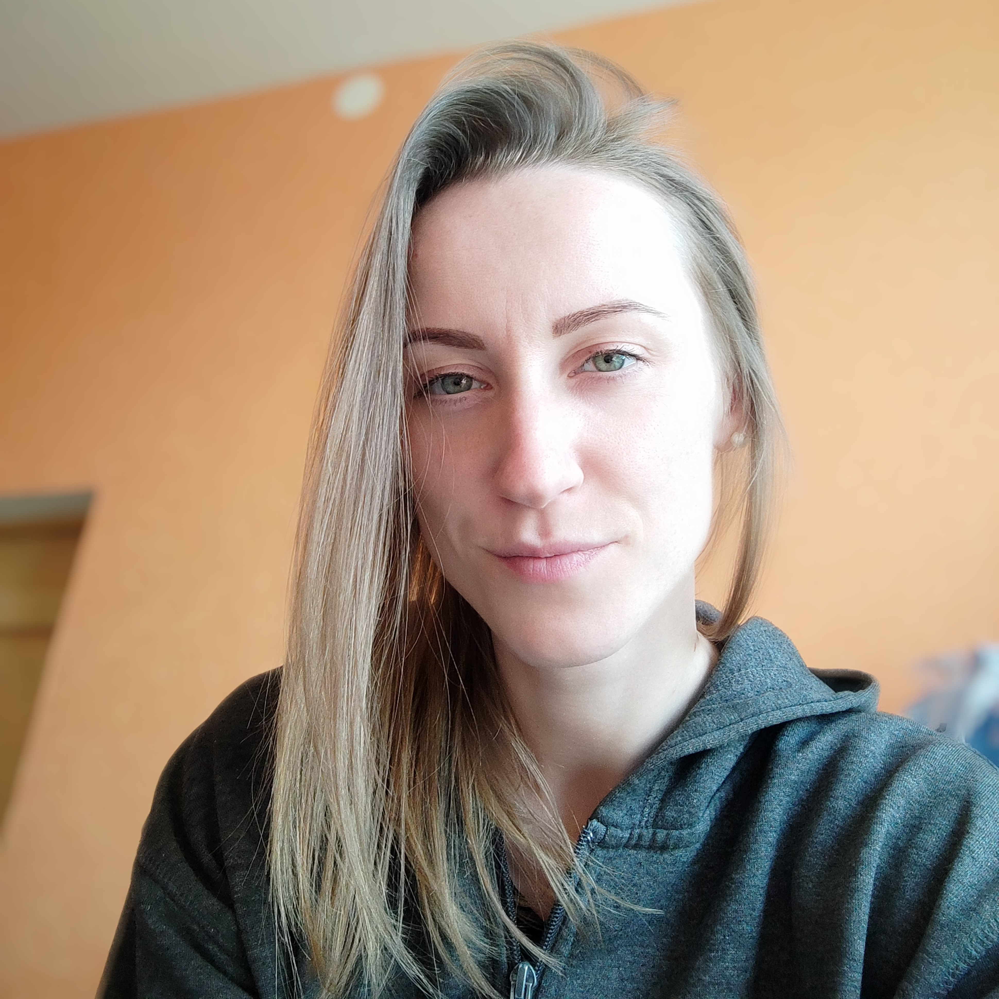

Sanija Beresņeva
Curriculum Vitae
I have graduated from Vidzeme University of Applied Sciences. I have worked as an IT teacher. For the past few months I have been learning about software testing in all my spare time. I am ambitious, self-motivated, able to quickly grasp new concepts and I am eager to be challenged in order to grow and further improve my IT skills.
Skills:
- Java
- Selenium
- Maven
- TestNG
- Jenkins
- Git
Education:
Experience:
- IT teacher
Interests:
- Travelling
- Solving sudoku
- Sewing